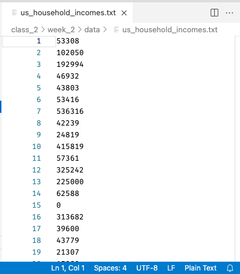

Ways To Store and Read Data#
Central to the life of the data scientist is, well, data! At this point you are already well on your way to being an expert in manipulating data once you have loaded it into Python, but we haven’t talked much about the various formats in which data may be given to you as files.
So in this reading and the next, we will talk about the two main families of data files you are likely to encounter, their pros and their cons, and how to work with them. These two families are:
Plaintext files: files that store data as text. These are files that you could easily open up in a text editor and read yourself, making them very flexible and robust.
Binary files: files that have processed your data prior to storage. Reading and writing data from these files tends to be faster, and these files will tend to take up less space on your computer, but you can’t easily open them up and look at them, and you need the right software to access them.
Below is an introduction to both Plaintext and Binary file formats, as well as an overview of how to work with them and considerations for which to use. Don’t worry about trying to memorize everything that follows, however! The world of data formats is kinda like a zoo, and if you try and memorize every fact on the plaques in front of every exhibit you’ll go insane. Instead, the goal is to give you a sense of what’s out there and to make sure you understand the two big types of data files (plaintext and binary) you may come across. For all the specifics, our goal is just to give you enough familiarity that you know what to Google when you come across these files on the wild!
Plaintext Files#
For all the advancements that have been made in sophisticated data storage formats, plaintext files remain the most common data format you are likely to encounter. That’s because plaintext file store data as—as the name suggests—plain text! As a result there is very little that can go wrong with data stored in this format—any computer that knows how to read a text file can open plaintext data, meaning no one has to worry about whether future data users or colleagues will have the right version of the right software to read the data.
Indeed, nearly all of the data that we’ve used in this specialization has been stored in plaintext files. The US Income Data we worked with in Class 2 Week 2, for example, came from a file called us_household_incomes.txt, where .txt is a file suffix that just tells the computer the file is a “text” file. Indeed, if I open up the file in VS Code (instead of trying to read it into Python), it looks like this:

Note both that the contents are easily readable—each line is the income of a single house that, when read into numpy, becomes one entry in a vector—and also that VS Code recognizes it as Plain Text, and displays that in the bottom right.
And what exactly does it mean that the file can be opened in any text editor and read? It means that at the level of the 1s and 0s that make up the file, numbers and letters are encoded using simple, commonly used encodings (like ASCII or Unicode. These files also do not contain anything complicated (pictures, media, etc.), and in fact don’t even include information like fonts, or formatting.
This simplicity makes plaintext files (nearly) universally compatible, and easy to work with, so are a favorite of programmers. Indeed, any code you’ve ever written in a file has almost surely been saved as a plaintext file too!
Tabular Plaintext Data#
When it comes to the type of tabular data that we are working with in this course (data organized into rows and columns), there are two main plaintext formats, and a handful of descendants to be aware of:
Comma Separated Values (CSVs): plaintext files that use the file suffix
.csv. In these files, each row of text represents one row in the data, and columns are separated by commas.Tab Separated Values (TSVs): plaintext files that usually use the file suffix
.txtor, less commonly,.tsv. In these files, each row of text represents one row in the data, and columns are separated by tabs (the special character denoting an indentation).Plaintext tabular data with other separators: In addition to these two formats, one can also create plaintext tabular files using basically any character to separate the columns, such as semi-colons, spaces, or anything else. These are a little bit unusual, but since it’s possible you will come across them in life we just wanted to mention that they exist! Note that there is no standard file suffix when using these other separators, so these types of files will just end up with a
.csvor.txtfile suffix.
Of these, CSVs are by far the most used, in part I suspect because tabs are often an invisible character, sometimes making it hard to see where one column ends and the next ends when looking at the file as text. A small CSV, by contrast, can be pretty easy to read (or at least get a sense of). Here, for example, is what a small CSV file looks like when I open it in VS Code:
Across the top are our column names, and each row below contains one row of data (one observation). Note that unlike in, say, Excel, the columns of a CSV won’t necessarily line up (unless by chance all the entries in a column are of the same size).
Moreover, in CSVs, you will notice that entries in columns that are meant to be read as text will often—though not always—be enclosed in quotation marks (in this CSV, the second column uses quotation marks but the first does not, despite both being text). In theory you don’t need them, but if you have data—like names written LAST NAME, FIRST NAME—that contain commas in the data itself, the quotation marks are required so your computer knows which commas separate columns and which are data.
By the way, to make CSVs easier to read, there’s a great little extension in VS Code called Rainbow CSV that will assign a color to all data in each CSV column. These colors aren’t in the file itself—VS Code is parsing the CSV and adding the colors after the file has been opened:
And indeed, if we wanted to read this into pandas, we could do so easily with pd.read_csv, and we’d get the table we expect!
import pandas as pd
pd.read_csv("data/world-very-small.csv")
| country | region | gdppcap08 | polityIV | |
|---|---|---|---|---|
| 0 | Brazil | S. America | 10296 | 18 |
| 1 | Germany | W. Europe | 35613 | 20 |
| 2 | Mexico | N. America | 14495 | 18 |
| 3 | Mozambique | Africa | 855 | 16 |
| 4 | Russia | C&E Europe | 16139 | 17 |
| 5 | Ukraine | C&E Europe | 7271 | 16 |
Non-Tabular Plaintext Data#
While CSVs and tab separated value files are the most common way to pass around tabular data in plaintext files, there’s one other plaintext data format that is become increasingly popular: JSON.
Unlike CSVs or TSVs, which can only be used for tabular data (data arranged in rows and columns), JSON files can store tabular data, but are designed to be much more flexible. In particular, JSON files can store both dictionaries (more formally called “key-value pairs”) and lists. Moreover, just like Python lists and dictionaries, lists and dictionaries stored in JSON files can be nested, meaning you can put dictionaries that contain other dictionaries that contain lists that contain dictionaries etc. in a JSON file.
To illustrate, let’s make a simple dictionary and Python and save it to a JSON file:
my_dict = {"pets": ["dogs", "cats"], "wild animals": ["zebras", "penguins"]}
my_dict
{'pets': ['dogs', 'cats'], 'wild animals': ['zebras', 'penguins']}
Now we can ask the json module from the Python standard library to convert our dictionary into a JSON string. If we wanted to save our dictionary to a file, we would just save the string to a text file with the file suffix .json:
import json
# Print out what the json
# representation of our dictionary would look like.
# Note that `indent=4` results in
# this nice looking indentation—without that option
# the contents all appear on one line.
print(json.dumps(my_dict, indent=4))
{
"pets": [
"dogs",
"cats"
],
"wild animals": [
"zebras",
"penguins"
]
}
As you can see, it’s a pretty human-readable format: it uses : to separate dictionary keys from values (just like Python), and puts lists in [] pairs (just like Python).
And while it isn’t really built for tabular data (it’s a kind inefficient way to write a table compared to CSVs), JSON can be used to store tabular data. For example, here’s what we get if I load our small CSV table from above, exported to a JSON file, and then open it up and VS Code:
# Load CSV
df = pd.read_csv("data/world-very-small.csv")
# Export to JSON
df.to_json("data/world-very-small.json", indent=4)
Import and Exporting Plaintext Tabular Data#
Another really good news: pandas makes working with all of these forms of tabular data trivially easy! Here’s all you need to read or write these different types of tabular data:
Reading:
Read a CSV:
df = pd.read_csv("path/to/file.csv")Read a TSV:
df = pd.read_csv("path/to/file.txt", sep="\t"). Note this is stillread_csv, just now with\tspecified as the separator. Indeed, you can load any [symbol] Separated Value plaintext file withpd.read_csv, just change out thesepargument!Read JSON:
df = pd.read_json("path/to/file.json"). Note that this can be a little finicky depending on how the JSON file is formatted. If the format is simple: the JSON file contains a dictionary, where each entry has a column name as a key and a list with the contents of the column, it works easily. If not you may need to use some of the additional keyword arguments.
Writing:
Write a CSV:
df.to_csv("path/to/file.csv")Write a TSV:
df.to_csv("path/to/file.csv", sep="\t")Write to JSON:
df.to_json("path/to/file.json")
And that’s really all there is to it for most files!
Or… it should be. But from time you’ll run into odd formatting issues, or dates stored oddly, or strange character, or other anomalies. If that does happen to you, however, should be aware of is that the pandas pd.read_csv function is one of the most impressive functions you will find anywhere in the Python ecosystem in terms of the number of inbuilt utilities it offers. And to see that, all you have to do is look at the function documentation. Seriously, go take a look at all the options the function offers in the official documentation. It can read zipped or compressed CSVs, it can automatically handle different symbols being used to separate decimal values, it can remove commas used in big numbers, it can process dates in any format, it can drop columns while loading data, it can ignore certain rows, you can add column names by hand, the options just go on and on!
Exercises#
Using the pandas
pd.read_csvfunction, read in the fileworld-very-small.csv.Using the pandas
pd.read_csvfunction, attempt to read in the fileworld-very-small-exercise.csv. When you look at the output, does it look correct?Open
world-very-small-exercise.csvin your text editor. Can you figure out what character is being used in place of commas to delineate where one column ends and the next column beings?Using the pandas
pd.read_csvfunction and thesepkeyword argument, read in the fileworld-very-small-exercise.csv. Does it look correct now?